目次 > ゲームについて > 日本Falcom 攻略 > ZWEI II > 敵キャラ一覧 > 場所
らんの眼
ZWEI II (ツヴァイ 2、ZWEI II Plus)
| 概要 | 情報 | 攻略チャート |
| フード交換 | ペットについて | ボス戦 |
| 敵キャラ一覧 | ハンターランク | G-コロッセオ |
| アイテム一覧 | ガジェット一覧 | トレジャー一覧 |
| ダンジョン一覧 | クリアデータ特典 | Plusの追加要素 |
| ZWEI II攻略へ | 目次へ戻る |
| [ セクンドゥム廃坑 ] [ オルディウム神殿 ] [ 金闇の森 ] [ アウロン大鉄塔 ] [ ムーンブリア城 ] [ 星ヶ峰 ] [ ルナ＝ムンドゥス ] [ メルセデク ] |
| 名前 | 画像 | レベル | HP | フード | メモ |
| あおじぇりー | 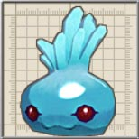 | 1 | 10 | かっぱ巻き | 他の魔物の邪気によって湧き水に命が宿った魔物。ミントの匂いがする。 |
| ばっとくん | 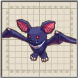 | 2 | 51 | ミートボール | 暗闇に潜むコウモリのモンスター。超音波で耳へ不快感を与える。 前作にも同名のキャラが登場しましたが、グラフィックが異なります。 |
| ちびわーむ | 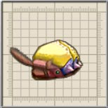 | 1 | 10 | かっぱ巻き | 仲間と力をあわせて飛びかかる虫。子供なのでまだ知能が低い。 |
| こぼると | 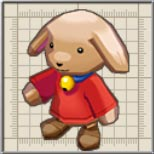 | 1 | 15 | かっぱ巻き | 群れで暮らす犬の魔物。弱いので愛玩動物として飼われてしまうことも。 前作にも登場。コボレンジャーの隊員。 |
| いわつつき | 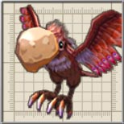 | 2 | 51 | ミートボール | 岩のように硬いくちばしを持つ怪鳥。ヒットアンドアウェイを繰り返す。 |
| あーす | 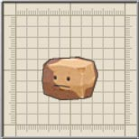 | 2 | 51 | ミートボール | 地を司る精霊の結晶体。主食は鉱石の欠片。 |
| ごーれむ | 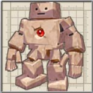 | 3 | 267 | ししゃも | 魔術で作られた石人形。地面を殴って衝撃波を発生させる。 前作にも同名のキャラが登場しましたが、グラフィックが異なります。 |
| はこむかで | 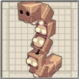 | 3 | 133 | ししゃも | 廃棄ブロックが連なって魔物と化したモノ。高速のスピンアタックを使う。 |
| しろおこじょ | 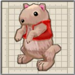 | 3 | 133 | ししゃも | かまいたちをブーメランのように投げる魔力を持ったおこじょ。 前作にも登場。 |
| わーむ | 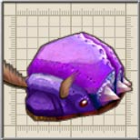 | 3 | 133 | ししゃも | 仲間と力をあわせて飛びかかる虫。死の間際に子供を産む習性を持つ。 |
| じらいいわ | 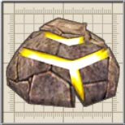 | 3 | 133 | ししゃも | ダンジョンの地面に生える地雷。時折爆風を発生させるため、注意が必要。 |
| すなもぐら | 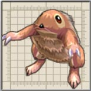 | 3 | 133 | ししゃも | 砂の中で暮らすモグラのモンスター。砂を巻き上げて攻撃する。 |
| おおあおじぇりー | 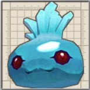 | 3 | 467 | ミートボール | 何体もの「あおじぇりー」が合体してできたもの。体重に任せた攻撃は強力。 倒すと「あおじぇりー」が大量に出てきます。 |
| ばっとおじさん | 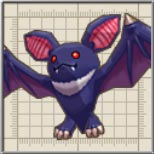 | 4 | 790 | ししゃも | 闇で力を蓄えた巨大コウモリ。得意の超音波は人一人を吹き飛ばす程の力を得た。 |
| べびーごーれむ | 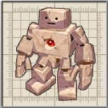 | 5 | 669 | なし | ゴーレムを作る際に、余った石材で作ったもの。気合いだけは十分。 |
| アークシェロブ | 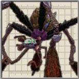 | 3 | 1336 | なし | 廃坑の奥に巣を持つ巨大な闇蜘蛛。肥大化した六本足で大地を揺らす。 「巣を持つ」って書いてありますが、アルウェンの魔力で作った魔物だったような・・・。 |
| ヒュドラ | 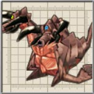 | 37 | 84560 | なし | 『双頭の地竜』と呼ばれ、二つの頭から交互に火の玉を撃ちだす。 「Zwei!!」の「クロップ洞窟」のボス。前作では毒や石化などの特殊効果のある攻撃を持っていたのですが・・・。 |
| ナイトロード | 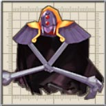 | 47 | 143131 | なし | 真祖の血統から外れた後天的な吸血鬼たちの王。妄執に支配されている。 「Zwei!!」の「スピリの古代迷宮」に登場。前作での設定上、最も気になったキャラクターですが、説明を見て納得です。 |
| 名前 | 画像 | レベル | HP | フード | メモ |
| [ セクンドゥム廃坑 ] [ オルディウム神殿 ] [ 金闇の森 ] [ アウロン大鉄塔 ] [ ムーンブリア城 ] [ 星ヶ峰 ] [ ルナ＝ムンドゥス ] [ メルセデク ] |
| 概要 | 情報 | 攻略チャート |
| フード交換 | ペットについて | ボス戦 |
| 敵キャラ一覧 | ハンターランク | G-コロッセオ |
| アイテム一覧 | ガジェット一覧 | トレジャー一覧 |
| ダンジョン一覧 | クリアデータ特典 | Plusの追加要素 |
| ページの上部へ | ZWEI II 攻略へ | 目次へ戻る |